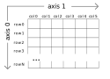

Working with Numpy Arrays#
Overview
Questions:
What are the differences between NumPy arrays and lists?
How can I use NumPy to do calculations?
Objectives:
Be able to name the differences between Python lists and numpy arrays.
Understand the idea of broadcasting.
Numpy is a widely used Python library for scientific computing. It has a number of useful features, including the a data structure called an array. Compared to the built-in data types lists which we used previously, numpy arrays have many features which can help you in your data analysis. Properly using the features of numpy arrays will make your code much faster and more efficient.
NumPy Arrays vs. Python Lists#
Previously, you have worked with the built-in types of lists. NumPy arrays seem similar, but offer some distinct advantages.
First open a Jupyter notebook to record your work.
To use the numpy library, we have to import it. When numpy is imported, it is often shortened to np. Define a system of three atoms as we have been using in many of our test cases:
import numpy as np
import math
# Construct some coordinates
coordinates = [[0, 0, 0], [0, 0, math.pow(2, 1/6)],
[0, 0, 2 * math.pow(2, 1/6)], [math.pow(2, 1/6), 0, 0]]
second_coordinate = coordinates[1]
Now that we have our second coordinate, let’s imagine we wanted to do something to it. Let’s imagine that we wanted to translate the position of the atom (much like we do in our Monte Carlo simulation!). We want to translate it 0.1 units in the x direction, -0.1 units in the y direction, and 0 units in the z direction.
Using the Python Standard Library as we have learned so far, we could write code for this translation:
translation_vector = [0.1, -0.1, 0]
new_coordinate = []
for i in range(3):
translated_coordinate = second_coordinate[i] + translation_vector[i]
new_coordinate.append(translated_coordinate)
print(new_coordinate)
[0.1, -0.1, 1.122462048309373]
In our code so far, we have written a lot of for loops. Use of NumPy, however, will allow us to avoid loops in many cases. Let’s consider how we could perform our translation with NumPy instead. One way numpy arrays and lists are different is that you can easily perform element-wise operations on numpy arrays without using for loops. You can make your code much faster if you use numpy element-by-element operations instead of loops.
If an operation is performed with two arrays (or a list and an array), NumPy will guess that you want to do element-wise addition. In the code we just wrote, we actually wanted an answer that looked like
where second_atom = [x1, y1, z1], and translation_vector = [x2, y2, z2]. In other words, we added elememts with the same index together (or did the operation “element-wise”). You will also notice that in the for loop we wrote, we were using the same index i for both lists we were indexing into. Because of this, we can numpy arrays to more easily perform this calculation.
Let’s see how we would do the same operation as before using NumPy arrays. To cast a list as a numpy array, you use np.array(list_name).
import numpy as np
# Create numpy array from list
second_coordinate_np = np.array(second_coordinate)
# Create a numpy array from list
translation_vector_np = np.array(translation_vector)
Using the features of numpy arrays, we could have instead written the following instead of the original for loop.
new_coordinate_np = second_coordinate_np + translation_vector_np
print(new_coordinate_np)
[ 0.1 -0.1 1.12246205]
NumPy performed the addition operation on these two arrays in an element-wise fashion. The shape of both lists was compared, and because they were the same shape, element-wise operation was used. You could have also subtracted, multiplied, or divided these, and it would have performed element-wise operations.
Note that this only worked because at least one of these variables was a NumPy array.
type(second_coordinate_np)
numpy.ndarray
What happens if we try this were both variables are a list?
type(second_coordinate)
list
# Adding two lists results in list concatenation
second_coordinate + translation_vector
[0, 0, 1.122462048309373, 0.1, -0.1, 0]
When you use the + with two lists, it results in list concatenation, or the second list being appended to the end of the first. Element-wise operation is not possible on standard Python lists. You must use for loops to iterature through them.
Concatenating arrays
If you wanted to concatenate the two numpy arrays, you could have done so with the np.concatenate function.
Addition of two lists results in concatenation of the lists Addition of to numpy arrays results in elements wise addition if possible
Element wise operations work with multiplication and division as well.
Check your understanding
Consider the definitions for a1 and a2.
What does each print statement result in?
a1 = np.array([2, 1, 0])
a2 = np.array([1, 3, 5])
print(a1 * a2)
print(a1 + a2)
Solution
The code block results in the following output
[2 3 0]
[3 4 5]
For the first line, the first element is a1[0]*a2[0], the second element is a1[1]*a2[1], and the third element is a1[2]*a2[2].
For the second line, the first element is a1[0]+a2[0], second is a1[1]+a2[1], third is a1[2]+a2[2].
Check your understanding
Consider the definitions for a1 and a2.
What does each print statement restult in?
a1 = [2, 1, 0]
a2 = [1, 3, 5]
print(a1 * a2)
print(a1 + a2)
Solution
The first print statement results in concatenation of the lists.
[2, 1, 0, 1, 3, 5]
The second print statement results in a TypeError. This is because two lists cannot be multiplied. If you wanted to do element-wise multiplication, you would have to use numpy arrays (like in the previous exercise.)
Array Shape#
The two arrays have to have compatible dimensions in order to be added. For example, if we try to add an array with two elements to an array of three elements, we will get an error.
my_array = np.array([0.2, 0.3])
second_coordinate + my_array
ValueError: operands could not be broadcast together with shapes (3,) (2,)
This is because the two arrays have incompatible sizes. You can see the size of the array by using the command:
array_name.shape
For example, we can check the size of second_coordinate_np:
second_coordinate_np.shape
We can convert our coordinates to a NumPy array and print the shape
coordinates_np = np.array(coordinates)
print(coordinates_np.shape)
Though hard to see from our example, when the shape of a NumPy array is given, the first number is the number of rows and the second number is the number of columns. When we use coordinates_np.shape it tells us (4,3). This means we have 4 rows and 3 columns (which is what we would expect for four atoms in three dimensions).
Accessing Information in a Multidimensional Array#
In the Python standard library, we have been representing coordinate information in a nested list. This required us to use two sets of brackets for indexing. For example, to get the x value of atom index 3 from our nested list (Python Standard library), we could do the following:
atom_3 = coordinates[3]
x_coord_atom_3 = atom_3[0]
print(x_coord_atom_3)
1.122462048309373
this could have been done in one line as well, note we have to use two sets of brackets:
print(coordinates[3][0])
1.122462048309373
When accessing information in a NumPy array, we can put the indices in one set of brackets. You put the row you would like first, followed by the column:
coordinates_np[3, 0]
Broadcasting#
However, in order for this type of operation to work, the arrays do not have to be exactly the same size they just have to have compatible shapes! Another special thing about numpy is something called broadcasting. Broadcasting occurs when you attempt mathematical operations on arrays that have different shapes. If possible, the smaller array is “broadcast” across the larger array.
Let’s think about what would happen if we wanted to move every atom in our coordinate set by our translation vector.
If you were working with Python lists, or you didn’t know about the features of numpy arrays, you might try to do this with a for loop.
num_atoms = len(coordinates)
new_coordinates = []
for n in range(num_atoms):
atom_coord = coordinates[n]
updated_coord = []
for i in range(3):
translated_coordinate = atom_coord[i] + translation_vector[i]
updated_coord.append(translated_coordinate)
new_coordinates.append(updated_coord)
print(new_coordinates)
[[0.1, -0.1, 0], [0.1, -0.1, 1.122462048309373], [0.1, -0.1, 2.244924096618746]]
If we think about the indices we were adding the x indices together, the y indices together, and the z indices together for the two arrays. You might write something that looks like this to express the addition:
NumPy is able to compare the shape of two arrays to see if they are compatible. When we examine the shape, we see that they both have 3 present. The shapes are compatible.Broadcasting in numpy allows us to achieve that with one command, rather than in multiple for loop.
new_coordinates_np = coordinates_np + translation_vector_np
print(new_coordinates_np)
Note that both variables do not have to be arrays for this to work, only one. However, the two array-like variables do have to have a matching dimension. You can see the shape of an array using the function np.shape.
np.shape(coordinates)
(3, 3)
np.shape(translation_vector_np)
(3,)
When you typed, coordinates + translation_vector_np, numpy looked at the shapes of both arrays to figure out if they were compatible.
If we are using a NumPy array for operations, this check will always be performed. You can also multiply arrays by scalars:
10 * coordinates_np
Logical comparisons#
We can also do logical comparisons on whole arrays. For example, to find out if values in the array are greater than 0, we can write
coordinates = np.array(coordinates)
print(coordinates > 0)
This will print either True or False for each array element depending on whether the value of that element is greater than 0 or not.
array([[False, True, False],
[False, False, True],
[False, True, True],
...,
[False, True, True],
[ True, True, True],
[ True, True, True]])
To get every value in the array that is greater than 0, we can use this as a list of indices we want, or a slice.
greater_than_0_values = coordinates[coordinates>0]
print(greater_than_0_values)
[1.38509308 0.83913362 1.65106295 ... 3.49745584 0.37549254 4.39339869]
Array Axes#
Imagine we wanted to calculate the geometric center of our atoms To do this, we would need to get the average x coordinate, the average y coordinate, and the average z coordinate.
Previously, we would have done this with a for loop and looped over the columns.
However, the numpy.mean function will let us do that without a for loop.
To calculate the mean, or average of a set of data,
coordinates_np.mean()
0.3741540161031243
When we use the mean function on an array without any other arguments, it will give us the average of all of the values. However, sometimes, we prefer to have the average of all the rows or columns instead. This ties into the idea of a NumPy array axis, a very important concept when working with NumPy.
Our NumPy array is an “n-dimensional” array.
The “n” indicates that we can have any number of dimensions, or axes.
We can see the number of axes or dimensions for our array using .ndim
coordinates_np.ndim
2
Our NumPy array has two dimensions, or two axes. This should make sense because we can use two numbers (row index and column index) to get the value of any cell in our NumPy array.
These axes are called “Axis 0” and “Axis 1”. Axis 0 is in the first position when indexing into an array, Axis 1 is the second. The figure below shows an illustration of Axis 0 and Axis 1. Axis 0 runs down the array, while Axis 1 goes across the columns.
For most NumPy array operations, we can indicate which axis to apply the operation to.
NumPy functions usually allow us to specify this using the axis command.
When we specify axis we give an array axis over which to give an average.
In our two dimensional array, we choose between axis=0 and axis=1.
A key thing to realize is that when we do axis=n, it applies the operation down those axes.
print(coordinates_np.mean(axis=0))
print(coordinates_np.mean(axis=1))
Notice that when we calculate the mean of axis=0, we get an output array with 4 values, while when we calculate the mean of axis=1, we get 3 values.
[0.28061551 0. 0.84184654]
[0. 0.37415402 0.74830803 0.37415402]
Check the shape of our coordinates again:
coordinates_np.shape
(4, 3)
If we want the column average (or the average of all the rows for a column), we would want the average value of our columns.
This corresponds to applying the operation down Axis 0.
When we examine the shape, we see that the have 4 values for each column (and this is indicated in the shape index = 1) We expect that we will have three values - the average x, the average y, and the average z.
center = np.mean(data, axis=0)
print(center)
There are a lot of ways to think about array axes, and it will be beneficial to do a google search to find another explanation.
Additional Reading#
If you are still working to understand NumPy, try reading the Beginner’s Tutorial.
Key Points
NumPy arrays which are the same size use element-wise operations when added or subtracted.
NumPy uses something called broadcasting for arrays which are not the same size to allow arrays to be added or multiplied.
NumPy has extensive documentation online - you should check this out if you need to do a computation.